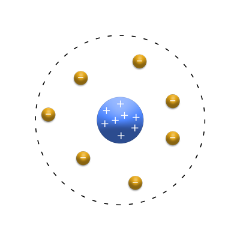
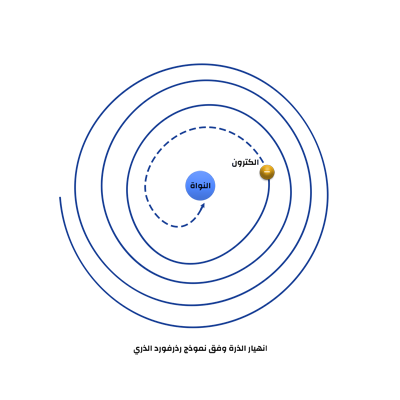
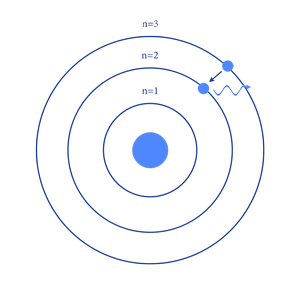

لمحة تاريخية عن الفيزياء الكمية
ظهور ميكانيكا الكم
نموذج الذرة
حَاوَل الإنْسان مُنْذ قديم الزَّمن مَعرِفة مُكوّنات المادَّة وتَفسير سُلُوك الذَّرات ، حَيْث ظهَر اَلكَثير مِن النَّماذج الَّتي تُوضِّح بنْية الذَّرة ؛ لتفْسير تصرُّفاتهَا . تَوالَت الاكْتشافات في هذا المجَال إِلى أنْ وصَلنا إِلى ميكانيكا الكَم التي قدَّمت لَنَا تفْسيرًا يُؤخَذ به إِلى يوْمنَا هذا .
اول ظهور لفكرة الذرة [2] [2]
أول من اِقترَح مفهوم الذَّرة هو العالم والفيلسوف اليوناني ديموقريطوس ( Democritus ) حيث عرَّف الذَّرة على أنَّها وحدةٌ متجانسةٌ غير محسوسة ، غير متناهية العدد ، مُتناهية الصِّغر ، وَهي الجُزء الَّذي لََا يتجزَّأ من المادَّة ، أزليةٌ ومتحرِّكةٌ بذاتها وتتشابه الذَّرات مِن حَيْث طبيعة المادَّة وَعدَم قبولها القسمة ، لكنها تختَلِف مِن حيث الشَّكل والوَضع والتَّرتيب.
بعْدهَا جاء أرسطو ليُعيد العِلم خُطوَة إِلى الوراء حيث قال إِنَّ كُلَّ شَيءٍ من حولنا يتكوَّن من العناصر الأساسيَّة وَهِي الماء والنَّار والهواء والتُّراب حَيْث سَادَت أَفكَار أرسْطو لفترةٍ مِن الزَّمن.
تنامي فكرة الذرة [3]
إِلى أنْ جاء العالم الإِنجليزي جون دالتون ( John Dalton ) في الفترة مَا بَين القرنين الثَّامن والتَّاسع عشر ، وَقال إِنَّ المادَّة تتكوَّن من العديد من الجسيمات غير القابلة للتَّجزئة تسمَّى الذَّرات ، وأنَّ كلَّ ذرَّات العُنصر متشابهة وتتميَّز بنفس الخواص ( الحجم - الشَّكل - الكُتلة ) ، وَالتي تختلف من عُنصرٍ إِلى آخر . وَفي نفس الفترة ظَهر مجموعة من العلماء من أبرزهم أنطوان لافوازييه ( Antoine Lavoisier ) وأميديو أفوجادْرو ( Amedeo Avogadro ) وَغيرِهم اَلكثِير فبَدَأ مفهوم الذَّرة بِالوضوح أكثر إِلَّا أَنَّه بقي غامضًا ومحلًّا للِجَدل .
فرضية لودفيغ بولتزمان عن الذرة واثباتها [4]
و في القرن التاسع عشر جاء العالم النمساوي لودفيغ بولتزمان و قال اذا احضرنا صندوق مليء بغاز معيا فإنه يستطيع معرفة و تفسير كل شيء من الحرارة و الضغط اذا افترضنا بأن الغاز مكون من جسيمات صغيرة تتحرك بشكل عشوائي و تصطدم في بعضها البعض وتصطدم ايضا في جدران الصندوق وقد أخرج لنا ثابت بولتزمان ويساوي
\(K=1.38*{10^{-23}}\)
حيث ينص على ان الحرارة ما هي إلا الطاقة الحركية للذرات \(T=K.T\)
و بعدها جاء العالم روبرت براون(Robert Brown) صاحب الحركة البراونية(Brownian motion) و التي تصف الحركة العشوائية لجزيئات ميكرونية في مائع الى ان جاء العالم أينشتاين في عام \(1905\) حيث استطاع ان يفسر هذه الحركة من خلال فرض بأن السائل يحتوي على ذرات و استطاع ببراعة رياضية أن يحسب ثابت بولتزمان و عرف أينشتاين بأن بولتزمان محق وان الذرات موجودة
الشكل الاولي للذرة [5]
في عام \(1897\) جاء العالم جوزيف جون طومسون و قام بتجربة أحضر فيها دارة كهربائية و وضع انبوبة في داخلها غاز
حيث وضع فرق جهد عالي من طرفي الانبوب و فرق جهد عالي فوق و اسفل الانبوب و لاحظ بأن هناك تيار سالب يمر ويصعد الى فوق يجذبه القطب الموجب و لاحظ ان التيار الموجب لا ينزل إلى الأسفل باتجاه التي السالب ومن خلال هذه التجربة بدء طومسون يفكر بشكل مختلف و ثوري حيث استنتج من خلال التجربة بأن التيار الصاعد الى اعلى كتلته صغيرة بينما التيار الموجب كتلته كبيرة مقارنة في التيار السالب لدرجة لم يستطع القطب السالب جذبه \(m(-)>>>(+)m\) وقد خطى خطوة كبيرة وقال بأن هذه جسيمات لها كتلة و في هذا العهد تم اكتشاف الإلكترون$-e$و اعتقد ايضا بأن$ m(+) $
ايضا هي جسيم و لاحقا أصبحنا نعرفه بالبروتون \(+p\) و ظهر هذا النموذج للذرة.
النموذج الثاني للذرة
بعدها قام العالم إرنست رذرفورد (Ernest Rutherford)تلميذ طومسون حيث قام بتجربة شهيرة قام بها بإحضار قطعة من الذهب حيث انها تتكون من ذرات مثلما قال طومسون و قام بإسقاط أشعة ألفا على قطعة الذهب.
و من خلال التجربة قام بالتعديل على نموذج طومسون وأصبح نموذج الذرة في الوسط بروتون ذو شحنة موجبة و يدور حولها إلكترونات ذات شحنة سالبة.

و لكن واجه هذا النموذج مشكلة او تعارض مع النظرية الكهرومغناطيسية حيث تقول بأن الإلكترون الذي يدور حول النواة يفقد طاقة فيبدأ بالاقتراب من النواة الى ان يسقط فيها فينهار نموذج الذرة السابق

اشعاع الجسم الاسود [6]
في هذه المرحلة كان العلماء يدرسون الضوء الخارج من الصندوق حيث كانوا يدرسون بشكل أساسي العلاقة ما بين التردد و شدة أو كمية الضوء
خالف الجانب النظري النتائج من التجربة حيث كان من المتوقع بأن تذهب العلاقة الى اللانهاية و سميت هذه كارثة الفوق بنفسجي
ظهور ميكانيكا الكم [7]
حتى جاء العالم ماكس بلانك(Max Planck) وحاول تفسير هذه الظاهرة وقال بأن جدران الجسم الأسود أشياء مثل النابض (الزنبرك) عند الاصطدام في المهتزات يؤدي إلى ضغطها و عند انبساطها ستطلق ضوء هذا الضوء تزداد شدته إلى حد ما (القمة) و بعدها يبدأ بالانخفاض و هذه يوافق السلوك الذي ظهر في التجربة السابقة و قد ادخل بلانك فكرة جديد حيث قال بأن الطاقة الخارجة من الجسم تكون متقطعة وليست متصلة
وقال بأن طاقة الضوء الخارج تساوي طاقة بلانك مضروبة في التردد \(E=h.f\)
وسميت هذه القطع كوانتا (Quanta) و و من هنا ظهرت ميكانيكا الكم
عاد أينشتين عام \(1905\) ليؤكد على أفكار بلانك و لكن مع اختلاف بسيط حيث كان بلانك يقول بأن الإشعاع الصادر من ارتداد المهتزات الذرية (النابض في جدران الجسم الأسود) متواصل فيما قال أينشتاين بأنه يطلق كم(مقدار محدد ) من الضوء بشكل متقطع
وقد اطلع على كل قطعة من هذه القطع الفوتون (Photon) وبهذا فإن الضوء موجات كهرومغناطيسية و على المستوى الأقل( الأصغر ) فوتونات
بعدها جاء العالم نيلز بور و قال بأنه لو قام بدمج افكار آينشتاين و بلانك ستعرف على شكل الذرة
و وضع بور نموذج للذرة سمي نموذج بور

و استطاع بور حساب سرعة الإلكترون و نصف قطر الإلكترون و طاقة الإلكترون و جميعها تعتمد على \(n\) و استطاع نموذج بور أن يفسر خطوط ذرة الهايدروجين

استطاع بور معرفة أن المهتزات الذرية (الزنبرك) في جدران الجسم الاسود التي اتى بها العالم ماكس بلانك في تجربته هي الذرة و أن إذا اكسبت الإلكترون طاقة معينة ينطلق الى مدار اعلى ويبقى غير مستقر و عند عودته الى المدار السابق يطلق فوتون
فكلما كان قفز الإلكترون الى مدار اعلى يطلق فوتون ذو تردد أعلى و العكس صحيح اما بالنسبة الى الطول الموجي فان يسلك سلوك عكس التردد كلما زاد التردد قل الطول الموجي
في عام \(1926\) جاء العالم لويس دي برولي(Louis de Broglie) قال بما أن الضوء موجة وجسيمات فهل من الممكن بأن الإلكتروني ايضا جسيم وموجة ولاحقا أثبت أنه كان على حق و أن الإلكترون جسيم وموجة
\(E^2 = (mc^2)^2+(pc)^2\) hence \((mc^2)^2 =0\) and \(p=mv\)
\(E^2 = (pc)^2=h.f\)
\(p=h.f/c - h/\lambda =h/\lambda\)
المحصلة
\(\lambda = h/mv\)
دراسة ذرة غير الهايدروجين
جاء العالم هايزنبيرغ وتوصل الى نتيجة غريبة و ان نوع الرياضيات الملائم لوصف الذرات غير قابل للتبديل
أي أن \(a*b \neq b*a\)
كان التوصل إلى هذه النتيجة غاية في الغرابة حيث لم ينشر هذه النتائج في وقتها و اكتفى بأخبار العالم ماكس بورن و فولفغانغ باولي
بقي العالم ماكس بورن يفكر في حديث هايزنبيرغ وتذكر شيء درسه سابقا ألا وهو المصفوفات و وضع ايضا العالم ماكس بورن معادلته الشهيرة
\(pq - qp = i h/2π\)
بعدها جاء بول ديراك و أوضح بأن المعادلة السابقة تخضع لي ميكانيكا هاميلتوني (Hamiltonian mechanics) في عام \(1925\) استطاع العالم إرفين شرودنغر باستخدام الموجات (Waves) تفسير و ايجاد معادلة الكاملة للحركة في ميكانيكا الكم
اما بول ديراك فقد وضع ما يسمى جبر ديراك (Dirac algebra) فأصبحت طريقة ديراك هي الطريقة العامة و التي تجمع طريقة المصفوفات لهايزنبيرغ و الموجة لشرودنغر و التي سنراها لاحقا في التطبيق العملي وأثبت أيضا بأن هذه الطرق الثلاث متكافئة لوصف ميكانيكا الكم